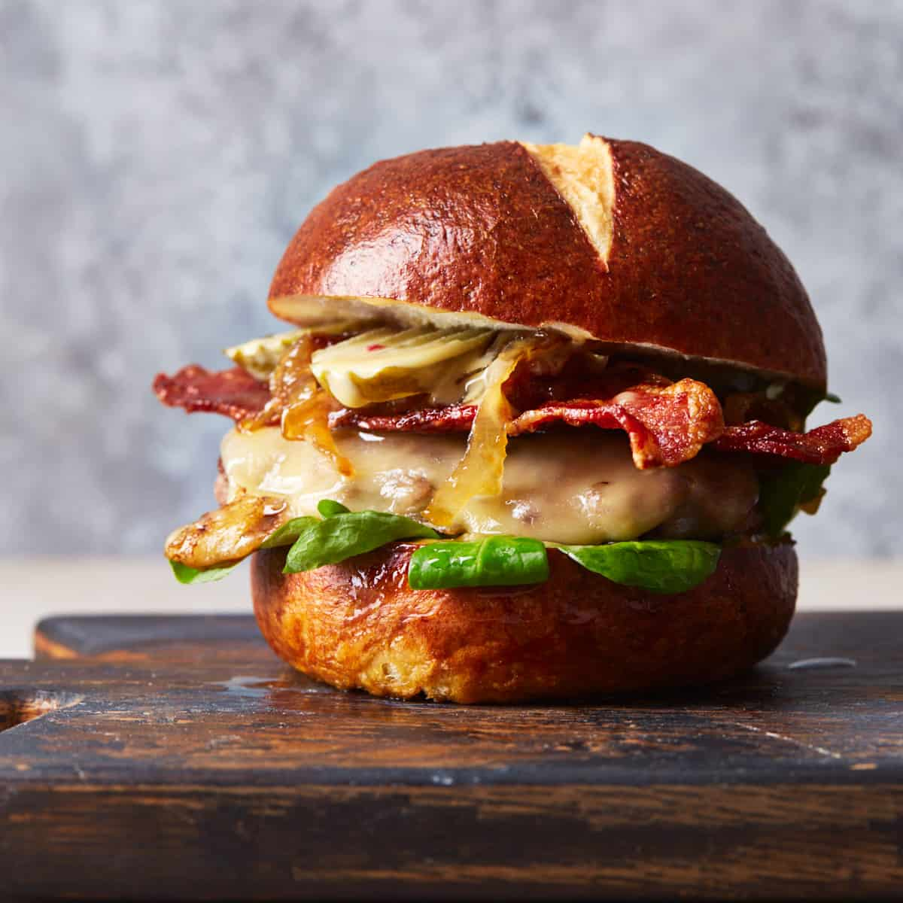

Cheeseburger
Ingrediants
- Ground Beef (30 fat/70lean)
- Burger Buns (I like pretzel since I generally use spicy/cajun seasoning)
- Burger fixings (pickel, tomato, whatever else goes between two buns requiring an unhinged jaw to consume)
- Crushed Crackers or Panko break crumbs
- Worcestershire Sauce
- Egg
- Milk
- Seasonings (pick your favorite poweders)
- Mixing Bowl
- Cast Iron Skillet
Steps
- Pre heat cast iron to 350 F
- Use mixing bowl and thourouly mix all food product (by food product anything that doesn't actively get added
after the patty; if you need a food processor to add it to the burger meat it probably doesn't go in a
mixing bowl)
- Form patties for desired weight/thickness (dent the middle of thick patties to prevent puffing)
- Cook in cast iron to taste (for thicker patties cook for three or four minutes each side)
- This is purely a matter of function, but melted cheese and toasted buns is a persoanl favorite. I'll toast
bread sometimes but melted cheese is always a must.
- Build burger to preference (toppings vs bottomings debate here)
- Most importantly plate, add sides, and consume. Feeling onions rings or potatoes? Throw those on as well (or
just on the burger).
Most carnivores have a personal opinion regarding what makes the perfect burger. While flavors and accouterments are
fiercely debated most people agree that sizzling hot, juicy, and proportions requiring the unhinging of one's jaw to
consume are a must.
Personally, I’ll add a considerable dash of cajun seasoning to the burger mix. Dijon mustard is great on the burger
bun of choice. Thick sliced pickles are a must. Thicker slices of tomato are fantastic. Red onion is a great
addition. Melted gouda cheeese and bacon. Bacon is the perfect addition to any burger. In lieu of lettuce I have a
preference for arugula (I have a tendency to go for more bitter and strong tastes if this isn’t known at this
point). In the interest of attempting to balance out the spiciness/bitterness of everything, fresh pretzel buns are
a great compliment.
Sides. Honestly I usually pair one burger with another and call that good. However, fries and onion rings are a
great way to do that. As far as beverages I usually go partially out of my way to wash down gastro food with beer
(by partially out of the way I mean across the house to the mini fridge) or at least tea.